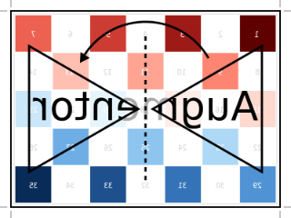
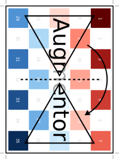
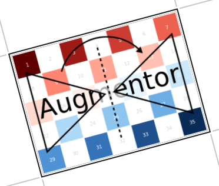
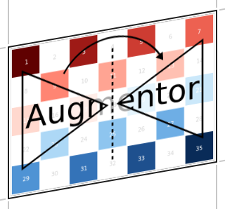
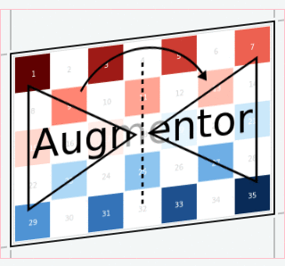
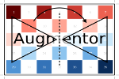
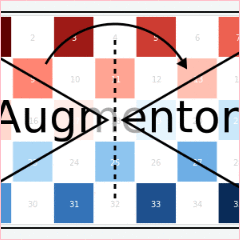

Supported Operations
This page lists and describes all supported image operations in great detail. The operations are organized based on their categories and subcategories.
A sizeable amount of the provided operations fall under the category of affine transformations. As such, they can be described using what is known as an affine map, which are inherently compose-able if chained together. However, utilizing such a affine formulation requires (costly) interpolation, which may not always be needed to achieve the desired effect. For that reason do some of the operations below also provide a special purpose implementation to produce their specified result. Those are usually preferred over the affine formulation if sensible considering the complete pipeline.
| Category | Available Operations |
|---|---|
| Mirroring | FlipX, FlipY |
| Rotating | Rotate90, Rotate270, Rotate180, Rotate |
| Shearing | ShearX, ShearY |
| Scaling | Scale, Zoom, Resize |
Aside from affine transformations, Augmentor also provides functionality for performing a variety of distortions. These types of operations usually provide a much larger distribution of possible output images.
| Category | Available Operations |
|---|---|
| Distorting | ElasticDistortion |
The input images from a given dataset can be of various shapes and sizes. Yet, it is often required by the algorithm that the data must be of uniform structure. To that end Augmentor provides a number of ways to alter or subset given images.
| Category | Available Operations |
|---|---|
| Cropping | Crop, CropNative, CropSize, CropRatio, RCropRatio |
| Resizing | Resize |
It is not uncommon that machine learning frameworks require the data in a specific form and layout. For example many deep learning frameworks expect the colorchannel of the images to be encoded in the third dimension of a 4-dimensional array. Augmentor allows to convert from (and to) these different layouts using special operations that are mainly useful in the beginning or end of a augmentation pipeline.
| Category | Available Operations |
|---|---|
| Conversion | ConvertEltype |
| Information Layout | SplitChannels, CombineChannels, PermuteDims, Reshape |
Aside from "true" operations that specify some kind of transformation, there are also a couple of special utility operations used for functionality such as stochastic branching.
| Category | Available Operations |
|---|---|
| Utility Operations | NoOp, CacheImage, Either |
Mirroring
Augmentor.FlipX — Type.FlipX <: Augmentor.AffineOperationDescription
Reverses the x-order of each pixel row. Another way of describing it would be to mirror the image on the y-axis, or to mirror the image horizontally.
If created using the parameter p, the operation will be lifted into Either(p=>FlipX(), 1-p=>NoOp()), where p denotes the probability of applying FlipX and 1-p the probability for applying NoOp. See the documentation of Either for more information.
Usage
FlipX()
FlipX(p)Arguments
p::Number: Optional. Probability of applying the operation. Must be in the interval [0,1].
See also
Examples
julia> using Augmentor
julia> img = [200 150; 50 1]
2×2 Array{Int64,2}:
200 150
50 1
julia> img_new = augment(img, FlipX())
2×2 Array{Int64,2}:
150 200
1 50| Input | Output for FlipX() |
|---|---|
 |  |
Augmentor.FlipY — Type.FlipY <: Augmentor.AffineOperationDescription
Reverses the y-order of each pixel column. Another way of describing it would be to mirror the image on the x-axis, or to mirror the image vertically.
If created using the parameter p, the operation will be lifted into Either(p=>FlipY(), 1-p=>NoOp()), where p denotes the probability of applying FlipY and 1-p the probability for applying NoOp. See the documentation of Either for more information.
Usage
FlipY()
FlipY(p)Arguments
p::Number: Optional. Probability of applying the operation. Must be in the interval [0,1].
See also
Examples
julia> using Augmentor
julia> img = [200 150; 50 1]
2×2 Array{Int64,2}:
200 150
50 1
julia> img_new = augment(img, FlipY())
2×2 Array{Int64,2}:
50 1
200 150| Input | Output for FlipY() |
|---|---|
|  |
Rotating
Augmentor.Rotate90 — Type.Rotate90 <: Augmentor.AffineOperationDescription
Rotates the image upwards 90 degrees. This is a special case rotation because it can be performed very efficiently by simply rearranging the existing pixels. However, it is generally not the case that the output image will have the same size as the input image, which is something to be aware of.
If created using the parameter p, the operation will be lifted into Either(p=>Rotate90(), 1-p=>NoOp()), where p denotes the probability of applying Rotate90 and 1-p the probability for applying NoOp. See the documentation of Either for more information.
Usage
Rotate90()
Rotate90(p)Arguments
p::Number: Optional. Probability of applying the operation. Must be in the interval [0,1].
See also
Rotate180, Rotate270, Rotate, Either, augment
Examples
julia> using Augmentor
julia> img = [200 150; 50 1]
2×2 Array{Int64,2}:
200 150
50 1
julia> img_new = augment(img, Rotate90())
2×2 Array{Int64,2}:
150 1
200 50| Input | Output for Rotate90() |
|---|---|
|  |
Augmentor.Rotate180 — Type.Rotate180 <: Augmentor.AffineOperationDescription
Rotates the image 180 degrees. This is a special case rotation because it can be performed very efficiently by simply rearranging the existing pixels. Furthermore, the output image will have the same dimensions as the input image.
If created using the parameter p, the operation will be lifted into Either(p=>Rotate180(), 1-p=>NoOp()), where p denotes the probability of applying Rotate180 and 1-p the probability for applying NoOp. See the documentation of Either for more information.
Usage
Rotate180()
Rotate180(p)Arguments
p::Number: Optional. Probability of applying the operation. Must be in the interval [0,1].
See also
Rotate90, Rotate270, Rotate, Either, augment
Examples
julia> using Augmentor
julia> img = [200 150; 50 1]
2×2 Array{Int64,2}:
200 150
50 1
julia> img_new = augment(img, Rotate180())
2×2 Array{Int64,2}:
1 50
150 200| Input | Output for Rotate180() |
|---|---|
|  |
Augmentor.Rotate270 — Type.Rotate270 <: Augmentor.AffineOperationDescription
Rotates the image upwards 270 degrees, which can also be described as rotating the image downwards 90 degrees. This is a special case rotation, because it can be performed very efficiently by simply rearranging the existing pixels. However, it is generally not the case that the output image will have the same size as the input image, which is something to be aware of.
If created using the parameter p, the operation will be lifted into Either(p=>Rotate270(), 1-p=>NoOp()), where p denotes the probability of applying Rotate270 and 1-p the probability for applying NoOp. See the documentation of Either for more information.
Usage
Rotate270()
Rotate270(p)Arguments
p::Number: Optional. Probability of applying the operation. Must be in the interval [0,1].
See also
Rotate90, Rotate180, Rotate, Either, augment
Examples
julia> using Augmentor
julia> img = [200 150; 50 1]
2×2 Array{Int64,2}:
200 150
50 1
julia> img_new = augment(img, Rotate270())
2×2 Array{Int64,2}:
50 200
1 150| Input | Output for Rotate270() |
|---|---|
|  |
Augmentor.Rotate — Type.Rotate <: Augmentor.AffineOperationDescription
Rotate the image upwards for the given degree. This operation can only be described as an affine transformation and will in general cause other operations of the pipeline to use their affine formulation as well (if they have one).
In contrast to the special case rotations outlined above, the type Rotate can describe any arbitrary number of degrees. It will always perform the rotation around the center of the image. This can be particularly useful when combining the operation with CropNative.
Usage
Rotate(degree)Arguments
degree:RealorAbstractVectorofRealthat denote the rotation angle(s) in degree. If a vector is provided, then a random element will be sampled each time the operation is applied.
See also
Rotate90, Rotate180, Rotate270, CropNative, augment
Examples
using Augmentor
img = testpattern()
# rotate exactly 45 degree
augment(img, Rotate(45))
# rotate between 10 and 20 degree upwards
augment(img, Rotate(10:20))
# rotate one of the five specified degrees
augment(img, Rotate([-10, -5, 0, 5, 10]))In contrast to the special case rotations outlined above, the type Rotate can describe any arbitrary number of degrees. It will always perform the rotation around the center of the image. This can be particularly useful when combining the operation with CropNative.
| Input | Output for Rotate(15) |
|---|---|
|  |
It is also possible to pass some abstract vector to the constructor, in which case Augmentor will randomly sample one of its elements every time the operation is applied.
| Input | Samples for Rotate(-10:10) |
|---|---|
|  |
Shearing
Augmentor.ShearX — Type.ShearX <: Augmentor.AffineOperationDescription
Shear the image horizontally for the given degree. This operation can only be described as an affine transformation and will in general cause other operations of the pipeline to use their affine formulation as well (if they have one).
It will always perform the transformation around the center of the image. This can be particularly useful when combining the operation with CropNative.
Usage
ShearX(degree)Arguments
degree:RealorAbstractVectorofRealthat denote the shearing angle(s) in degree. If a vector is provided, then a random element will be sampled each time the operation is applied.
See also
Examples
using Augmentor
img = testpattern()
# shear horizontally exactly 5 degree
augment(img, ShearX(5))
# shear horizontally between 10 and 20 degree to the right
augment(img, ShearX(10:20))
# shear horizontally one of the five specified degrees
augment(img, ShearX([-10, -5, 0, 5, 10]))It will always perform the transformation around the center of the image. This can be particularly useful when combining the operation with CropNative.
| Input | Output for ShearX(10) |
|---|---|
|  |
It is also possible to pass some abstract vector to the constructor, in which case Augmentor will randomly sample one of its elements every time the operation is applied.
| Input | Samples for ShearX(-10:10) |
|---|---|
|  |
Augmentor.ShearY — Type.ShearY <: Augmentor.AffineOperationDescription
Shear the image vertically for the given degree. This operation can only be described as an affine transformation and will in general cause other operations of the pipeline to use their affine formulation as well (if they have one).
It will always perform the transformation around the center of the image. This can be particularly useful when combining the operation with CropNative.
Usage
ShearY(degree)Arguments
degree:RealorAbstractVectorofRealthat denote the shearing angle(s) in degree. If a vector is provided, then a random element will be sampled each time the operation is applied.
See also
Examples
using Augmentor
img = testpattern()
# shear vertically exactly 5 degree
augment(img, ShearY(5))
# shear vertically between 10 and 20 degree upwards
augment(img, ShearY(10:20))
# shear vertically one of the five specified degrees
augment(img, ShearY([-10, -5, 0, 5, 10]))It will always perform the transformation around the center of the image. This can be particularly useful when combining the operation with CropNative.
| Input | Output for ShearY(10) |
|---|---|
|  |
It is also possible to pass some abstract vector to the constructor, in which case Augmentor will randomly sample one of its elements every time the operation is applied.
| Input | Samples for ShearY(-10:10) |
|---|---|
|  |
Scaling
Augmentor.Scale — Type.Scale <: Augmentor.AffineOperationDescription
Multiplies the image height and image width by the specified factors. This means that the size of the output image depends on the size of the input image.
The provided factors can either be numbers or vectors of numbers.
If numbers are provided, then the operation is deterministic and will always scale the input image with the same factors.
In the case vectors are provided, then each time the operation is applied a valid index is sampled and the elements corresponding to that index are used as scaling factors.
The scaling is performed relative to the image center, which can be useful when following the operation with CropNative.
Usage
Scale(factors)
Scale(factors...)Arguments
factors:NTupleorVarargofRealorAbstractVectorthat denote the scale factor(s) for each array dimension. If only one variable is specified it is assumed that height and width should be scaled by the same factor(s).
See also
Examples
using Augmentor
img = testpattern()
# half the image size
augment(img, Scale(0.5))
# uniformly scale by a random factor from 1.2, 1.3, or 1.4
augment(img, Scale([1.2, 1.3, 1.4]))
# scale by either 0.5x0.7 or by 0.6x0.8
augment(img, Scale([0.5, 0.6], [0.7, 0.8]))| Input | Output for Scale(0.9, 0.5) |
|---|---|
|  |
In the case that only a single scale factor is specified, the operation will assume that the intention is to scale all dimensions uniformly by that factor.
| Input | Output for Scale(1.2) |
|---|---|
|  |
It is also possible to pass some abstract vector(s) to the constructor, in which case Augmentor will randomly sample one of its elements every time the operation is applied.
| Input | Samples for Scale(0.9:0.05:1.2) |
|---|---|
|  |
Augmentor.Zoom — Type.Zoom <: Augmentor.ImageOperationDescription
Scales the image height and image width by the specified factors, but crops the image such that the original size is preserved.
The provided factors can either be numbers or vectors of numbers.
If numbers are provided, then the operation is deterministic and will always scale the input image with the same factors.
In the case vectors are provided, then each time the operation is applied a valid index is sampled and the elements corresponding to that index are used as scaling factors.
In contrast to Scale the size of the output image is the same as the size of the input image, while the content is scaled the same way. The same effect could be achieved by following a Scale with a CropSize, with the caveat that one would need to know the exact size of the input image before-hand.
Usage
Zoom(factors)
Zoom(factors...)Arguments
factors:NTupleorVarargofRealorAbstractVectorthat denote the scale factor(s) for each array dimension. If only one variable is specified it is assumed that height and width should be scaled by the same factor(s).
See also
Examples
using Augmentor
img = testpattern()
# half the image size
augment(img, Zoom(0.5))
# uniformly scale by a random factor from 1.2, 1.3, or 1.4
augment(img, Zoom([1.2, 1.3, 1.4]))
# scale by either 0.5x0.7 or by 0.6x0.8
augment(img, Zoom([0.5, 0.6], [0.7, 0.8]))| Input | Output for Zoom(1.2) |
|---|---|
|  |
It is also possible to pass some abstract vector to the constructor, in which case Augmentor will randomly sample one of its elements every time the operation is applied.
| Input | Samples for Zoom(0.9:0.05:1.3) |
|---|---|
|  |
Resizing
Augmentor.Resize — Type.Resize <: Augmentor.ImageOperationDescription
Transforms the image into a fixed specified pixel size.
This operation does not take any measures to preserve aspect ratio of the source image. Instead, the original image will simply be resized to the given dimensions. This is useful when one needs a set of images to all be of the exact same size.
Usage
Resize(; height=64, width=64)
Resize(size)
Resize(size...)Arguments
size:NTupleorVarargofIntthat denote the output size in pixel for each dimension.
See also
Examples
using Augmentor
img = testpattern()
augment(img, Resize(30, 40))| Input | Output for Resize(100, 150) |
|---|---|
|  |
Distorting
Augmentor.ElasticDistortion — Type.ElasticDistortion <: Augmentor.ImageOperationDescription
Distorts the given image using a randomly (uniform) generated vector field of the given grid size. This field will be stretched over the given image when applied, which in turn will morph the original image into a new image using a linear interpolation of both the image and the vector field.
In contrast to RandomDistortion, the resulting vector field is also smoothed using a Gaussian filter with of parameter sigma. This will result in a less chaotic vector field and thus resemble a more natural distortion.
Usage
ElasticDistortion(gridheight, gridwidth, scale, sigma, [iter=1], [border=false], [norm=true])
ElasticDistortion(gridheight, gridwidth, scale; [sigma=2], [iter=1], [border=false], [norm=true])
ElasticDistortion(gridheight, [gridwidth]; [scale=0.2], [sigma=2], [iter=1], [border=false], [norm=true])Arguments
gridheight: The grid height of the displacement vector field. This effectively specifies the number of vertices along the Y dimension used as landmarks, where all the positions between the grid points are interpolated.gridwidth: The grid width of the displacement vector field. This effectively specifies the number of vertices along the Y dimension used as landmarks, where all the positions between the grid points are interpolated.scale: Optional. The scaling factor applied to all displacement vectors in the field. This effectively defines the "strength" of the deformation. There is no theoretical upper limit to this factor, but a value somewhere between0.01and1.0seem to be the most reasonable choices. Default to0.2.sigma: Optional. Sigma parameter of the Gaussian filter. This parameter effectively controls the strength of the smoothing. Defaults to2.iter: Optional. The number of times the smoothing operation is applied to the displacement vector field. This is especially useful ifborder = falsebecause the border will be reset to zero after each pass. Thus the displacement is a little less aggressive towards the borders of the image than it is towards its center. Defaults to1.border: Optional. Specifies if the borders should be distorted as well. Iffalse, the borders of the image will be preserved. This effectively pins the outermost vertices on their original position and the operation thus only distorts the inner content of the image. Defaults tofalse.norm: Optional. Iftrue, the displacement vectors of the field will be normalized by the norm of the field. This will have the effect that thescalefactor should be more or less independent of the grid size. Defaults totrue.
See also
Examples
using Augmentor
img = testpattern()
# distort with pinned borders
augment(img, ElasticDistortion(15, 15; scale = 0.1))
# distort everything more smoothly.
augment(img, ElasticDistortion(10, 10; sigma = 4, iter=3, border=true))| Input | ElasticDistortion(15, 15, 0.1) |
|---|---|
|  |
| Input | ElasticDistortion(10, 10, 0.2, 4, 3, true) |
|---|---|
|  |
Cropping
The process of cropping is useful to discard parts of the input image. To provide this functionality lazily, applying a crop introduces a layer of representation called a "view" or SubArray. This is different yet compatible with how affine operations or other special purpose implementations work. This means that chaining a crop with some affine operation is perfectly fine if done sequentially. However, it is generally not advised to combine affine operations with crop operations within an Either block. Doing that would force the Either to trigger the eager computation of its branches in order to preserve type-stability.
Augmentor.Crop — Type.Crop <: Augmentor.ImageOperationDescription
Crops out the area denoted by the specified pixel ranges.
For example the operation Crop(5:100, 2:10) would denote a crop for the rectangle that starts at x=2 and y=5 in the top left corner and ends at x=10 and y=100 in the bottom right corner. As we can see the y-axis is specified first, because that is how the image is stored in an array. Thus the order of the provided indices ranges needs to reflect the order of the array dimensions.
Usage
Crop(indices)
Crop(indices...)Arguments
indices:NTupleorVarargofUnitRangethat denote the cropping range for each array dimension. This is very similar to how the indices forvieware specified.
See also
CropNative, CropSize, CropRatio, augment
Examples
julia> using Augmentor
julia> img = testpattern()
300×400 Array{RGBA{N0f8},2}:
[...]
julia> augment(img, Crop(1:30, 361:400)) # crop upper right corner
30×40 Array{RGBA{N0f8},2}:
[...]| Input | Crop(70:140, 25:155) |
|---|---|
|  |
Augmentor.CropNative — Type.CropNative <: Augmentor.ImageOperationDescription
Crops out the area denoted by the specified pixel ranges.
For example the operation CropNative(5:100, 2:10) would denote a crop for the rectangle that starts at x=2 and y=5 in the top left corner of native space and ends at x=10 and y=100 in the bottom right corner of native space.
In contrast to Crop, the position x=1 y=1 is not necessarily located at the top left of the current image, but instead depends on the cumulative effect of the previous transformations. The reason for this is because affine transformations are usually performed around the center of the image, which is reflected in "native space". This is useful for combining transformations such as Rotation or ShearX with a crop around the center area.
Usage
CropNative(indices)
CropNative(indices...)Arguments
indices:NTupleorVarargofUnitRangethat denote the cropping range for each array dimension. This is very similar to how the indices forvieware specified.
See also
Crop, CropSize, CropRatio, augment
Examples
using Augmentor
img = testpattern()
# cropped at top left corner
augment(img, Rotate(45) |> Crop(1:300, 1:400))
# cropped around center of rotated image
augment(img, Rotate(45) |> CropNative(1:300, 1:400))(Rotate(45), Crop(1:210,1:280)) | (Rotate(45), CropNative(1:210,1:280)) |
|---|---|
 |  |
Augmentor.CropSize — Type.CropSize <: Augmentor.ImageOperationDescription
Crops out the area of the specified pixel size around the center of the input image.
For example the operation CropSize(10, 50) would denote a crop for a rectangle of height 10 and width 50 around the center of the input image.
Usage
CropSize(size)
CropSize(size...)Arguments
size:NTupleorVarargofIntthat denote the output size in pixel for each dimension.
See also
CropRatio, Crop, CropNative, augment
Examples
using Augmentor
img = testpattern()
# cropped around center of rotated image
augment(img, Rotate(45) |> CropSize(300, 400))| Input | Output for CropSize(45, 225) |
|---|---|
|  |
Augmentor.CropRatio — Type.CropRatio <: Augmentor.ImageOperationDescription
Crops out the biggest area around the center of the given image such that the output image satisfies the specified aspect ratio (i.e. width divided by height).
For example the operation CropRatio(1) would denote a crop for the biggest square around the center of the image.
For randomly placed crops take a look at RCropRatio.
Usage
CropRatio(ratio)
CropRatio(; ratio = 1)Arguments
ratio::Number: Optional. A number denoting the aspect ratio. For example specifyingratio=16/9would denote a 16:9 aspect ratio. Defaults to1, which describes a square crop.
See also
RCropRatio, CropSize, Crop, CropNative, augment
Examples
using Augmentor
img = testpattern()
# crop biggest square around the image center
augment(img, CropRatio(1))| Input | Output for CropRatio(1) |
|---|---|
|  |
Augmentor.RCropRatio — Type.RCropRatio <: Augmentor.ImageOperationDescription
Crops out the biggest possible area at some random position of the given image, such that the output image satisfies the specified aspect ratio (i.e. width divided by height).
For example the operation RCropRatio(1) would denote a crop for the biggest possible square. If there is more than one such square, then one will be selected at random.
Usage
RCropRatio(ratio)
RCropRatio(; ratio = 1)Arguments
ratio::Number: Optional. A number denoting the aspect ratio. For example specifyingratio=16/9would denote a 16:9 aspect ratio. Defaults to1, which describes a square crop.
See also
CropRatio, CropSize, Crop, CropNative, augment
Examples
using Augmentor
img = testpattern()
# crop a randomly placed square of maxmimum size
augment(img, RCropRatio(1))| Input | Samples for RCropRatio(1) |
|---|---|
|  |
Conversion
Augmentor.ConvertEltype — Type.ConvertEltype <: Augmentor.OperationDescription
Convert the element type of the given array/image into the given eltype. This operation is especially useful for converting color images to grayscale (or the other way around). That said the operation is not specific to color types and can also be used for numeric arrays (e.g. with separated channels).
Note that this is an element-wise convert function. Thus it can not be used to combine or separate color channels. Use SplitChannels or CombineChannels for those purposes.
Usage
ConvertEltype(eltype)Arguments
eltype: The eltype of the resulting array/image.
See also
CombineChannels, SplitChannels, augment
Examples
julia> using Augmentor, Colors
julia> A = rand(RGB, 10, 10) # three color channels
10×10 Array{RGB{Float64},2}:
[...]
julia> augment(A, ConvertEltype(Gray)) # convert to grayscale
10×10 Array{Gray{Float64},2}:
[...]
julia> augment(A, ConvertEltype(Gray{Float32})) # more specific
10×10 Array{Gray{Float32},2}:
[...]| Input | ConvertEltype(GrayA) |
|---|---|
|  |
Color Channels
Augmentor.SplitChannels — Type.SplitChannels <: Augmentor.OperationDescription
Splits out the color channels of the given image using the function ImageCore.channelview. This will effectively create a new array dimension for the colors in the front. In contrast to ImageCore.channelview it will also result in a new dimension for Gray images.
This operation is mainly useful at the end of a pipeline in combination with PermuteDims in order to prepare the image for the training algorithm, which often requires the color channels to be separate.
Usage
SplitChannels()See also
PermuteDims, CombineChannels, augment
Examples
julia> using Augmentor
julia> img = testpattern()
300×400 Array{RGBA{N0f8},2}:
[...]
julia> augment(img, SplitChannels())
4×300×400 Array{N0f8,3}:
[...]
julia> augment(img, SplitChannels() |> PermuteDims(3,2,1))
400×300×4 Array{N0f8,3}:
[...]Augmentor.CombineChannels — Type.CombineChannels <: Augmentor.OperationDescription
Combines the first dimension of a given array into a colorant of type colortype using the function ImageCore.colorview. The main difference is that a separate color channel is also expected for Gray images.
The shape of the input image has to be appropriate for the given colortype, which also means that the separated color channel has to be the first dimension of the array. See PermuteDims if that is not the case.
Usage
CombineChannels(colortype)Arguments
colortype: The color type of the resulting image. Must be a subtype ofColorTypes.Colorantand match the color channel of the given image.
See also
SplitChannels, PermuteDims, augment
Examples
julia> using Augmentor, Colors
julia> A = rand(3, 10, 10) # three color channels
3×10×10 Array{Float64,3}:
[...]
julia> augment(A, CombineChannels(RGB))
10×10 Array{RGB{Float64},2}:
[...]
julia> B = rand(1, 10, 10) # singleton color channel
1×10×10 Array{Float64,3}:
[...]
julia> augment(B, CombineChannels(Gray))
10×10 Array{Gray{Float64},2}:
[...]Array Shape
Augmentor.PermuteDims — Type.PermuteDims <: Augmentor.OperationDescription
Permute the dimensions of the given array with the predefined permutation perm. This operation is particularly useful if the order of the dimensions needs to be different than the default julian layout.
Augmentor expects the given images to be in vertical-major layout for which the colors are encoded in the element type itself. Many deep learning frameworks however require their input in a different order. For example it is not untypical that the color channels are expected to be encoded in the third dimension.
Usage
PermuteDims(perm)
PermuteDims(perm...)Arguments
perm: The concrete dimension permutation that should be used. Has to be specified as aVararg{Int}or as aNTupleofInt. The length ofpermhas to match the number of dimensions of the expected input image to that operation.
See also
SplitChannels, CombineChannels, augment
Examples
julia> using Augmentor, Colors
julia> A = rand(10, 5, 3) # width=10, height=5, and 3 color channels
10×5×3 Array{Float64,3}:
[...]
julia> img = augment(A, PermuteDims(3,2,1) |> CombineChannels(RGB))
5×10 Array{RGB{Float64},2}:
[...]
julia> img2 = testpattern()
300×400 Array{RGBA{N0f8},2}:
[...]
julia> B = augment(img2, SplitChannels() |> PermuteDims(3,2,1))
400×300×4 Array{N0f8,3}:
[...]Augmentor.Reshape — Type.Reshape <: Augmentor.OperationDescription
Reinterpret the shape of the given array of numbers or colorants. This is useful for example to create singleton dimensions that deep learning frameworks may need for colorless images, or for converting an image to a feature vector and vice versa.
Usage
Reshape(dims)
Reshape(dims...)Arguments
dims: The new sizes for each dimension of the output image. Has to be specified as aVararg{Int}or as aNTupleofInt.
See also
Examples
julia> using Augmentor, Colors
julia> A = rand(10,10)
10×10 Array{Float64,2}:
[...]
julia> augment(A, Reshape(10,10,1)) # add trailing singleton dimension
10×10×1 Array{Float64,3}:
[...]Utility Operations
Augmentor.CacheImage — Type.CacheImage <: Augmentor.ImageOperationDescription
Write the current state of the image into the working memory. Optionally a user has the option to specify a preallocated buffer to write the image into. Note that if a buffer is provided, then it has to be of the correct size and eltype.
Even without a preallocated buffer it can be beneficial in some situations to cache the image. An example for such a scenario is when chaining a number of affine transformations after an elastic distortion, because performing that lazily requires nested interpolation.
Usage
CacheImage()
CacheImage(buffer)Arguments
buffer: Optional. A preallocatedAbstractArrayof the appropriate size and eltype.
See also
Examples
using Augmentor
# make pipeline that forces caching after elastic distortion
pl = ElasticDistortion(3,3) |> CacheImage() |> Rotate(-10:10) |> ShearX(-5:5)
# cache output of elastic distortion into the allocated
# 20x20 Matrix{Float64}. Note that for this case this assumes that
# the input image is also a 20x20 Matrix{Float64}
pl = ElasticDistortion(3,3) |> CacheImage(zeros(20,20)) |> Rotate(-10:10)
# convenience syntax with the same effect as above.
pl = ElasticDistortion(3,3) |> zeros(20,20) |> Rotate(-10:10)Augmentor.NoOp — Type.NoOp <: Augmentor.AffineOperationIdentity transformation that does not do anything with the given image but instead passes it along unchanged (without copying).
Usually used in combination with Either to denote a "branch" that does not perform any computation.
Augmentor.Either — Type.Either <: Augmentor.ImageOperationDescription
Allows for choosing between different Augmentor.Operations at random when applied. This is particularly useful if one for example wants to first either rotate the image 90 degree clockwise or anticlockwise (but never both) and then apply some other operation(s) afterwards.
When compiling a pipeline, Either will analyze the provided operations in order to identify the most preferred way to apply the individual operation when sampled, that is supported by all given operations. This way the output of applying Either will be inferable and the whole pipeline will remain type-stable, even though randomness is involved.
By default each specified image operation has the same probability of occurrence. This default behaviour can be overwritten by specifying the chance manually.
Usage
Either(operations, [chances])
Either(operations...; [chances])
Either(pairs...)
*(operations...)
*(pairs...)Arguments
operations:NTupleorVarargofAugmentor.ImageOperationthat denote the possible choices to sample from when applied.chances: Optional. Denotes the relative chances for an operation to be sampled. Has to contain the same number of elements asoperations. Either anNTupleof numbers if specified as positional argument, or alternatively aAbstractVectorof numbers if specified as a keyword argument. If omitted every operation will have equal probability of occurring.pairs:VarargofPair{<:Real,<:Augmentor.ImageOperation}. A compact way to specify an operation and its chance of occurring together.
See also
Examples
using Augmentor
img = testpattern()
# all three operations have equal chance of occuring
augment(img, Either(FlipX(), FlipY(), NoOp()))
augment(img, FlipX() * FlipY() * NoOp())
# NoOp is twice as likely as either FlipX or FlipY
augment(img, Either(1=>FlipX(), 1=>FlipY(), 2=>NoOp()))
augment(img, Either(FlipX(), FlipY(), NoOp(), chances=[1,1,2]))
augment(img, Either((FlipX(), FlipY(), NoOp()), (1,1,2)))
augment(img, (1=>FlipX()) * (1=>FlipY()) * (2=>NoOp()))